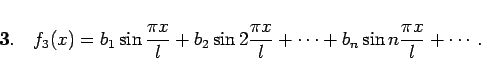

Inhalt Index DeskTop Bronstein

 Unendliche Reihen Fourier-Reihen Koeffizientenbestimmung für symmetrische Funktionen
Unendliche Reihen Fourier-Reihen Koeffizientenbestimmung für symmetrische Funktionen


Jede Funktion  , die in einem Intervall die DIRICHLETschen Bedingungen erfüllt, kann in diesem Intervall in konvergente Reihen folgender Formen entwickelt werden:
, die in einem Intervall die DIRICHLETschen Bedingungen erfüllt, kann in diesem Intervall in konvergente Reihen folgender Formen entwickelt werden:
| + | |||
| + | (7.105a) |
In den Unstetigkeitsstellen wird gesetzt. Die Entwicklungskoeffizienten werden mit Hilfe der EULERschen Formeln (7.95a,b) für bestimmt.
| (7.105b) |
Die Periode der Funktion f2(x) ist T = 2l; im Intervall ist f2(x) von der Symmetrie 1. Art und identisch mit  .
.
Die Entwicklungskoeffizienten für f2(x) werden nach den Formeln für den Fall der Symmetrie 1. Art mit T = 2l bestimmt.
|  | (7.105c) |
Die Periode der Funktion f3(x) ist , im Intervall 0 < x < l ist f3(x) von der Symmetrie 2. Art und identisch mit  .
.
Die Entwicklungskoeffizienten werden mit den Formeln für den Fall der Symmetrie 2. Art (7.101) für T = 2l bestimmt.